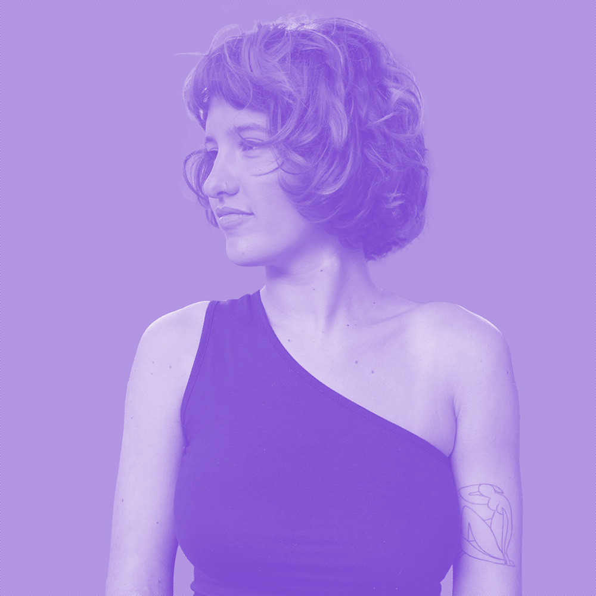
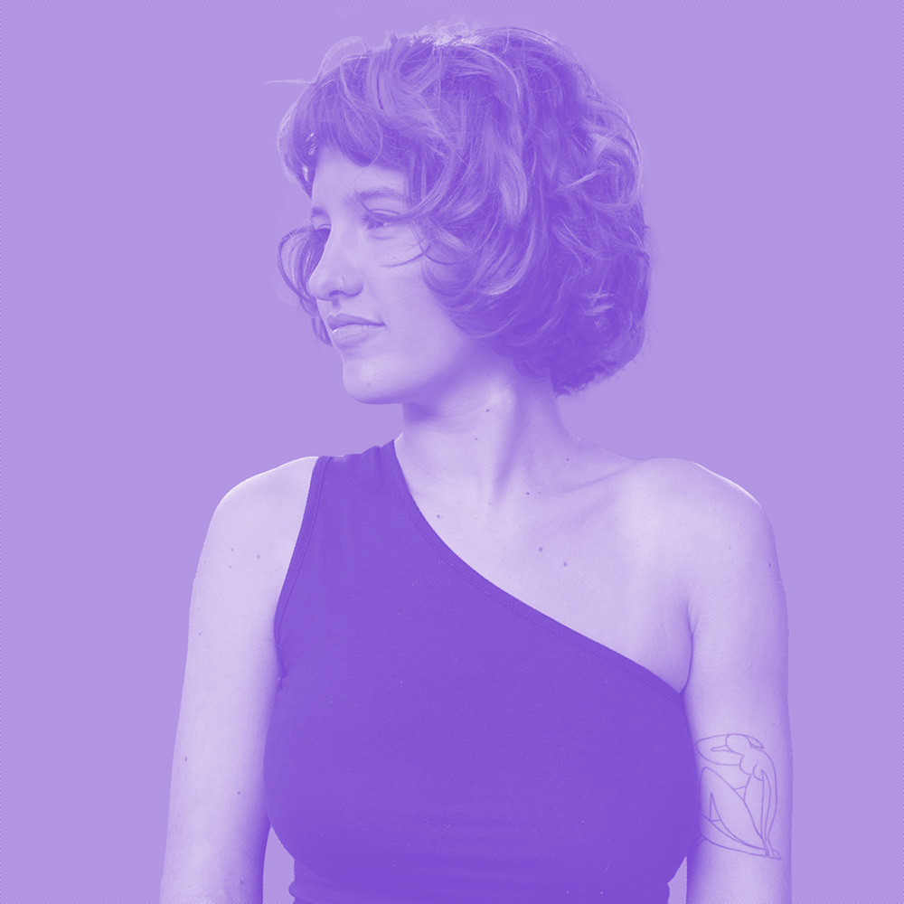

Malena Medus / 20. 09. 2000
Bahía Blanca, Argentina.

Malena Medus / 20. 09. 2000
Bahía Blanca, Argentina.
Soy estudiante de diseño en la Universidad Torcuato di Tella, actualmente residente en Buenos Aires.
Ser estudiante de diseño integral me permitió tener una visión holística donde me pregunto cuál es el mejor camino cuando me enfrento a problemas; no solo en los proyectuales sino también en los de la vida cotidiana.